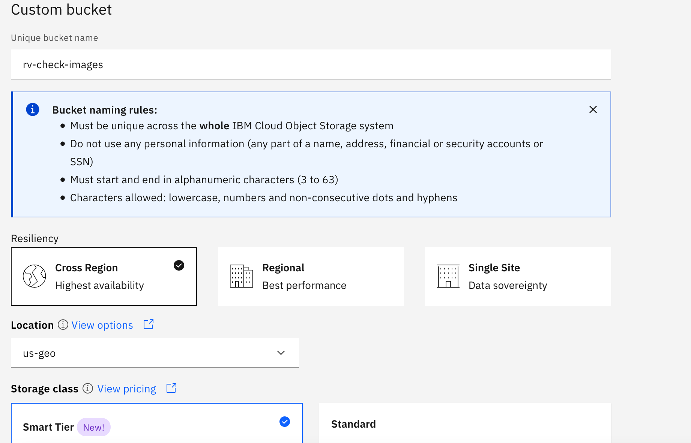
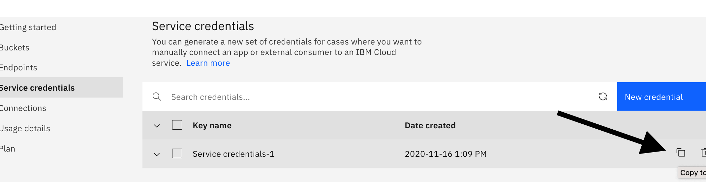
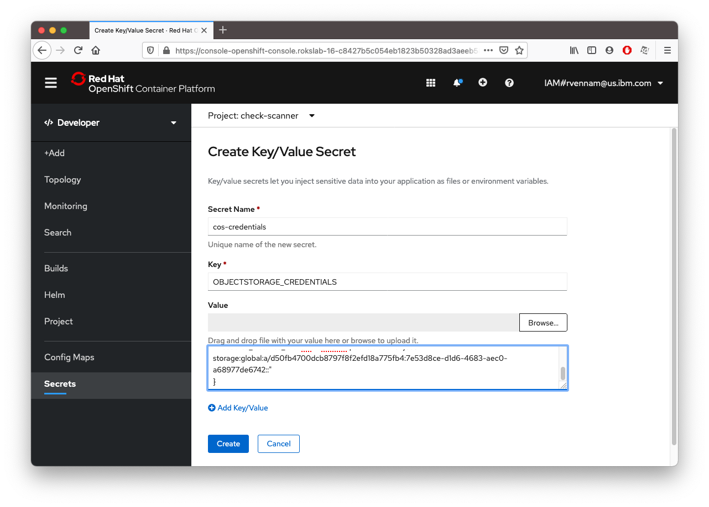
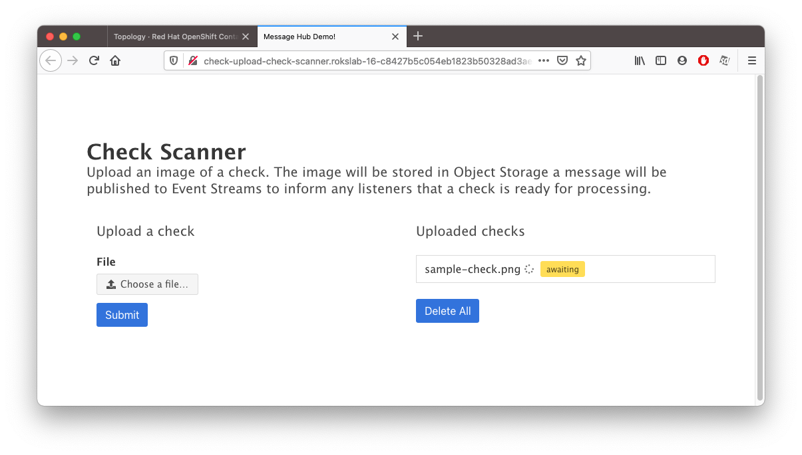

Create an IBM Cloud Object Storage service
IBM Cloud Object Storage is encrypted and dispersed across multiple geographic locations, and accessed over HTTP using a REST API. It provides flexible, cost-effective, and scalable cloud storage for unstructured data. You will use this to store the files uploaded by the Check Upload application.
- In your IBM Cloud tab, click on Catalog, create a Cloud Object Storage service,
- Plan: Standard
- Service name:
<your-initials>-cos. For example:rrv-cos - Select a resource group and click Create
- Under Buckets, click Create bucket.
- Create a Custom bucket -> Customize your bucket
- Unique bucket name :
<your-initials>-check-images. For example:rv-check-images - Resiliency : Cross Region
- Location : us-geo
- Scroll down and and click Create bucket 
- Unique bucket name :
- Create the service credentials
- Service Credentials -> New credential -> Add
- Expand Service credentials-1 and then click on the Copy icon. 
You've now created a Object Storage instance and have the credentials copied to your clipboard. Lets give these credentials to your application.
The Secret object type provides a mechanism to hold sensitive information such as passwords and keys. These secrets can then be added to your application.
- In your OpenShift web console tab, click on Secrets
- Create -> Key/Value Secret
- Secret Name :
cos-credentials - Key :
OBJECTSTORAGE_CREDENTIALS - Value : Press Cmd+V(Mac)/Ctrl-V(Windows) to paste from your clipboard. 
- Create
- Add Secret to Workload -> Select a workload -> check-scanner-upload
- Save
- Secret Name :
Your application pod will restart with these new object storage credentials. Visit your application route again. You should now be able to upload images and have them be stored in Object Storage.
Download this sample check image and upload it to the app. Right click and save this image to your computer:

Upload it to your Check Upload app. 
Notice that the checks are stuck in "awaiting" status. We haven't deployed our Check Processor application yet. Let's do that next.